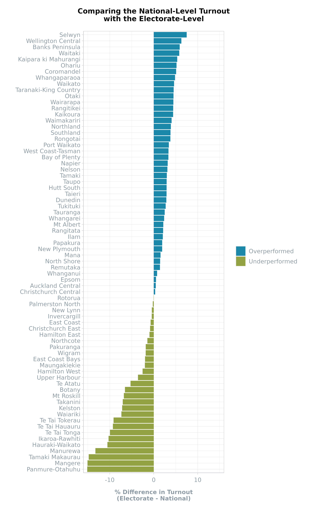
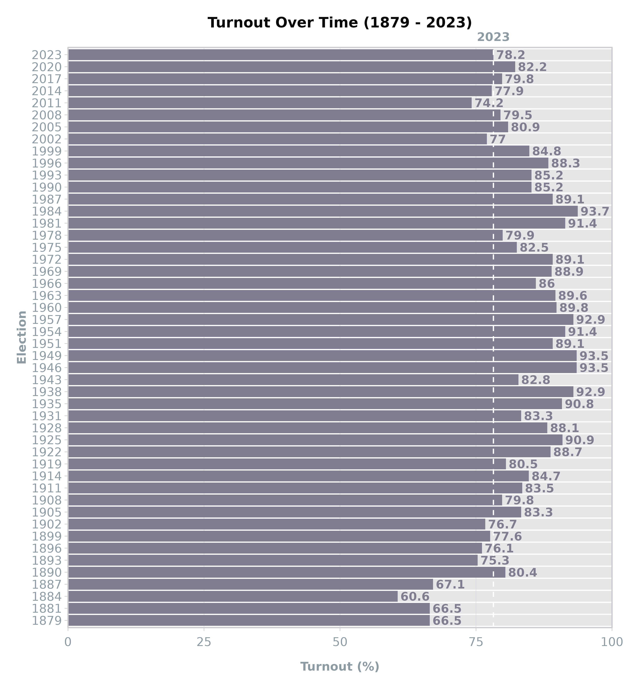

This article explores the turnout
and turnout_historic
datasets.
Turnout
The turnout dataset contains the overall turnout and
informal vote by electorate and ballot type (Candidate and Party). It
also has the total vote (informal + valid) and total number of electors
in the election.
This dataset can be combined with the turnout_historic
dataset which contains the overall turnout at the national-level for all
elections between 1879 and 2023. It also contains the total number of
MPs in parliament for that election, and the total number of electors.
Upload data
View the shape of data frame.
| Election | Ballot | Electorate | Electors | Turnout | Total | Informal |
|---|---|---|---|---|---|---|
| 2023 | Party | Auckland Central | 45426 | 78.66 | 35734 | 85 |
| 2023 | Party | Banks Peninsula | 59383 | 84.10 | 49944 | 194 |
| 2023 | Party | Bay of Plenty | 56200 | 81.53 | 45822 | 209 |
| 2023 | Party | Botany | 53160 | 71.65 | 38087 | 189 |
| 2023 | Party | Christchurch Central | 50999 | 78.52 | 40044 | 166 |
| 2023 | Party | Christchurch East | 50898 | 77.37 | 39378 | 203 |
Merge datasets
Add the national-level dataset to the electorate-level to compare the difference.
df1 <- scgUtils::get_data("turnout_historic")
df2 <- left_join(df, df1, by = "Election")
df2 <- df2 %>%
filter(Ballot == "Party", Election == 2023) %>%
mutate(Turnout = Turnout.x - Turnout.y)
head(df2)| Election | Ballot | Electorate | Electors.x | Turnout.x | Total | Informal | MPs | Electors.y | Turnout.y | Turnout |
|---|---|---|---|---|---|---|---|---|---|---|
| 2023 | Party | Auckland Central | 45426 | 78.66 | 35734 | 85 | 123 | 3688292 | 78.2 | 0.46 |
| 2023 | Party | Banks Peninsula | 59383 | 84.10 | 49944 | 194 | 123 | 3688292 | 78.2 | 5.90 |
| 2023 | Party | Bay of Plenty | 56200 | 81.53 | 45822 | 209 | 123 | 3688292 | 78.2 | 3.33 |
| 2023 | Party | Botany | 53160 | 71.65 | 38087 | 189 | 123 | 3688292 | 78.2 | -6.55 |
| 2023 | Party | Christchurch Central | 50999 | 78.52 | 40044 | 166 | 123 | 3688292 | 78.2 | 0.32 |
| 2023 | Party | Christchurch East | 50898 | 77.37 | 39378 | 203 | 123 | 3688292 | 78.2 | -0.83 |
Visualise Turnout by Electorate
Visualise if the electorate turnout was above or below the average turnout for that election year (2023).
df2 %>%
ggplot(aes(x = Turnout,
y = reorder(Electorate, Turnout),
fill = ifelse(Turnout < 0, "Underperformed", "Overperformed"))) +
geom_bar(stat = "identity") +
scale_fill_manual(values = scgUtils::colour_pal("divBlueGreen", n = 2)) +
scale_x_continuous(limits = c(-16, 16), expand = c(0, 0)) +
labs(title = "Comparing the National-Level Turnout\nwith the Electorate-Level",
fill = "",
y = "",
x = "% Difference in Turnout\n(Electorate - National)") +
scgUtils::theme_scg() +
theme(panel.border = element_rect(colour = scgUtils::colour_pal("French Grey")))
Turnout (Historic)
Upload data
View the shape of data frame.
head(df1)| Election | MPs | Electors | Turnout |
|---|---|---|---|
| 1879 | 88 | 82271 | 66.5 |
| 1881 | 95 | 120972 | 66.5 |
| 1884 | 95 | 137686 | 60.6 |
| 1887 | 95 | 175410 | 67.1 |
| 1890 | 74 | 183171 | 80.4 |
| 1893 | 74 | 302997 | 75.3 |
Visualise Turnout over Time
Visualise turnout over time to see how 2023 compares.
df1 %>%
ggplot(aes(x = as.character(Election), y = Turnout, label = Turnout)) +
geom_bar(data = df1,
aes(x = as.character(Election), y = 100),
stat = "identity",
fill = scgUtils::colour_pal("French Grey"),
alpha = 0.5) +
geom_bar(stat = "identity",
fill = scgUtils::colour_pal("Waterloo")) +
geom_hline(yintercept = df1$Turnout[df1$Election == 2023],
colour = "white", linetype = "dashed") +
geom_text(hjust = 0, nudge_y = 0.5, size = 3.5, fontface = 2,
colour = scgUtils::colour_pal("Waterloo")) +
coord_flip(clip = "off", xlim = c(1, length(df1$Election))) +
annotate("text", x = length(df1$Election) + 1.5,
y = df1$Turnout[df1$Election == 2023],
label = "2023",
colour = scgUtils::colour_pal("Regent Grey"),
size = 3.5, fontface = 2) +
scale_y_continuous(limits = c(0, 100), expand = c(0, 0)) +
labs(title = "Turnout Over Time (1879 - 2023)",
y = "Turnout (%)",
x = "Election") +
scgUtils::theme_scg() +
theme(panel.grid.major.y = element_blank(),
panel.grid.minor = element_blank(),
panel.border = element_rect(colour = scgUtils::colour_pal("French Grey")))